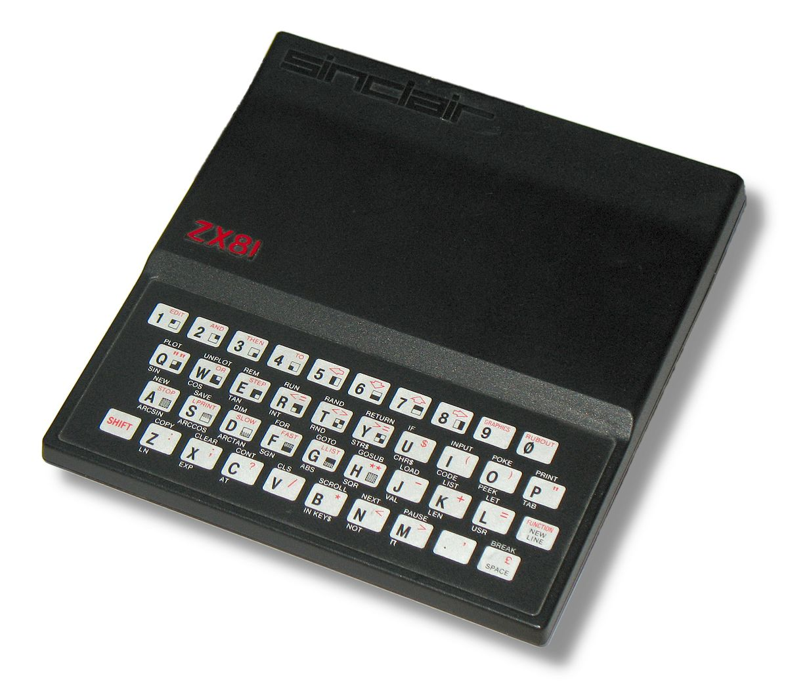
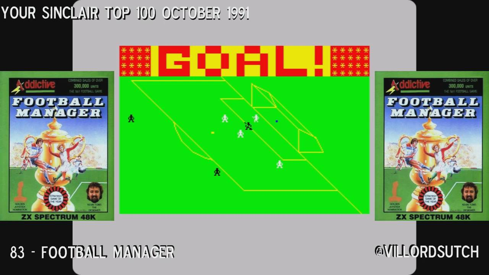
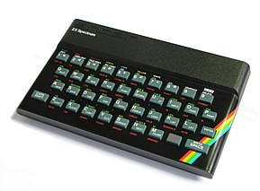
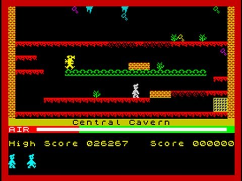
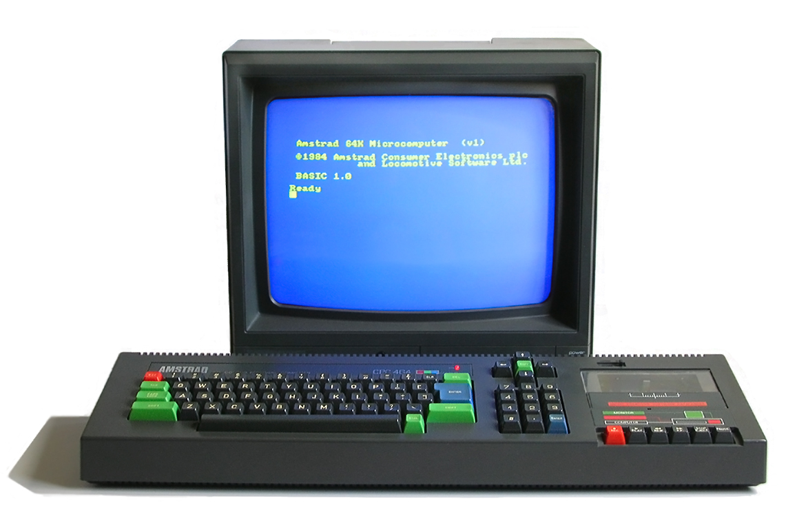
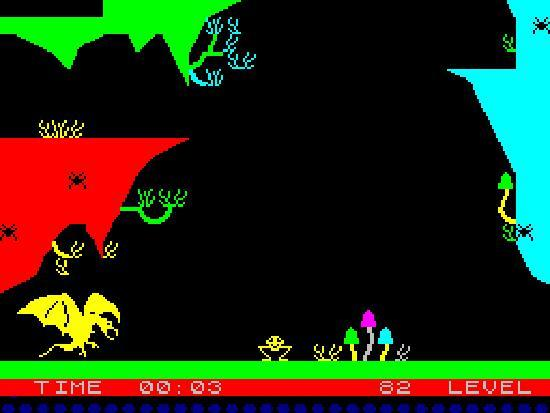
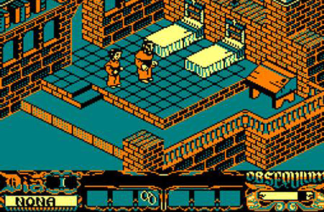

A Europa la indústria del videojoc mai havia acabat d’arrencar, aquest continent sempre havia estat vist com un consumidor i no com un productor. En l’entrada de la dècada dels 8 bits (1980-1989) això va canviar una mica l’any 1981 amb l’aparició de l’ordinador personal de 8 bits zx81 per part de la companyia anglesa Sinclair.
Poc temps després que el zx81 estigues al mercat van aparèixer els primers jocs com Football manager que donava inici als jocs d’estratègia esportiva, Pman o Can of worms de temàtiques surrealistes.
Un any després tenia lloc la sortida al mercat del zx spectrum un altre ordinador de 8 bits i de la mateixa companyia, aquest venia acompanyat amb títols com Manic miner o Jet set willy, que inauguraran el gènere de plataformes junt amb el ja esmentat Pitfall! d’Activision.
El 1983 surt un competidor per al zx spectrum, un altre ordinador de 8 bits anomenat Amstrad cpc 464, tot i no haver tingut una bona acollida inicial i ser-li impossible desfer-se de Sinclair.
Però aquest comptava amb un catàleg inicial de 50 títols que a poc a poc li van permetre superar a Sinclair. A més, tres anys després va acabar comprant Sinclaire Research, nom que rebia l’empresa en aquell moment perquè el va modificar.
En aquesta època també pren importància la companyia espanyola Indescomp i el seu llançament de Bogaboo al Regne Unit, considerat un gran èxit. Posteriorment va ser llançat a Espanya on va rebre el nom de La pulga, amb aquest comença l'època daurada del software espanyol i amb ella arriben títols com La abadía del crimen, basat en el llibre El nombre de la Rosa, aquest joc bastant superiors als de l’època és recordat amb molta estima pels jugadors, ja que els feia sentir dins d’un univers viu i real.
També s’ha de nomenar el conegut mundialment Tetris creat per Alexey Pajitnov a l’URSS. Una dada curiosa és que el Tetris està basat en un altre joc anomenat Pentominós, però està simplificat a set peces diferents per reduir el nombre de combinacions i la complexitat d’aquest. L’impacte d’aquest joc va ser tan gran en aquell moment que encara segueix present en les noves generacions.